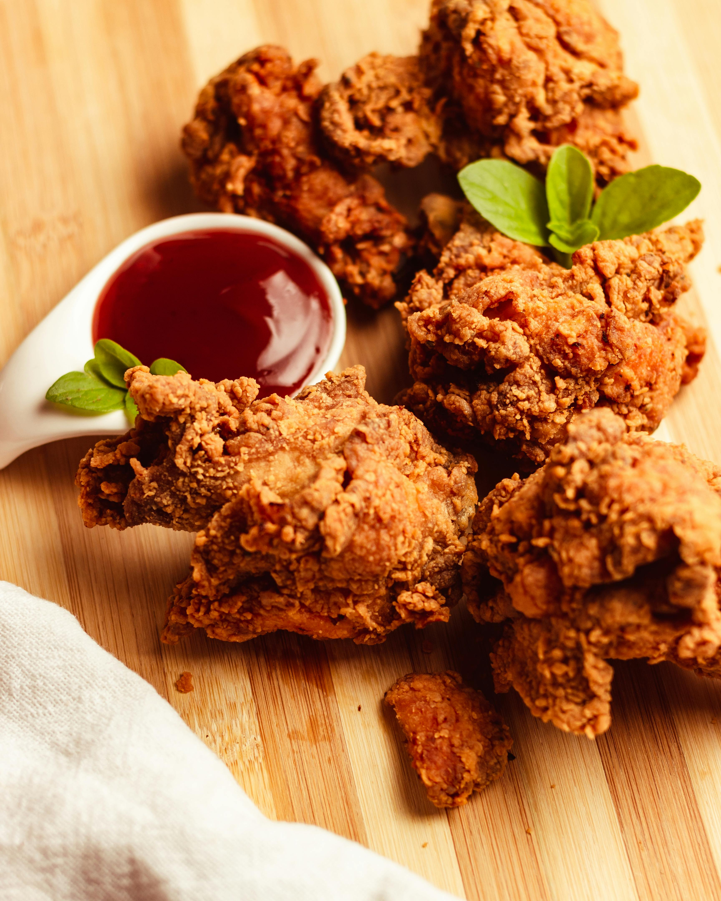

Fried Chicken

Description
Fried chicken, also called Southern fried chicken, is a dish consisting of chicken
pieces, coated with seasoned flour or batter, that are pan-fried, deep-fried,
pressure-fried, or air-fried. The breading adds a crisp coating or crust to the
exterior of the chicken while retaining juices in the meat. Broiler chickens are
most commonly used.
Ingredients
- 1 (4 pound) chicken, cut into pieces
- 1 cup buttermilk
- 2 cups all-purpose flour for coating
- 1 teaspoon paprika
- salt and ground black pepper to taste
- 2 quarts vegetable oil for frying
Steps
- Skin cut up chicken pieces if you prefer.
- Place flour in a large plastic bag (let
the amount of chicken you are cooking dictate
the amount of flour you use). Season flour with
paprika (which helps to brown the chicken), salt,
and black pepper
- Dip chicken pieces in buttermilk, then
transfer, a few at a time, to the bag with
flour; seal the bag and shake until well
coated. Repeat with remaining chicken.
- Place coated chicken on a baking sheet or
tray; cover with a clean dish towel or waxed
paper. LET SIT UNTIL THE FLOUR IS A
PASTE-LIKE CONSISTENCY. THIS IS CRUCIAL!
- Fill a large skillet (cast iron is best)
about 1/3 to 1/2 full with vegetable oil.
Heat until VERY hot.
- Carefully lower as many chicken pieces into
the skillet as it can hold. Fry in HOT oil
on both sides until brown.
- When browned, reduce heat and cover skillet;
cook for 30 minutes (the chicken will be
cooked through but not crispy). Remove cover,
raise heat again, and continue frying until
crispy.
- Drain fried chicken on paper towels.
Depending on how much chicken you have, you
may have to fry in a few batches. Keep the
finished chicken in a slightly warm oven
while frying the rest.
- Enjoy!
Link to Home Page
Home